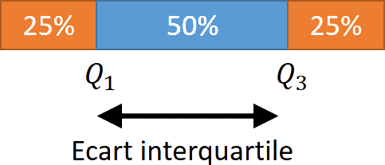
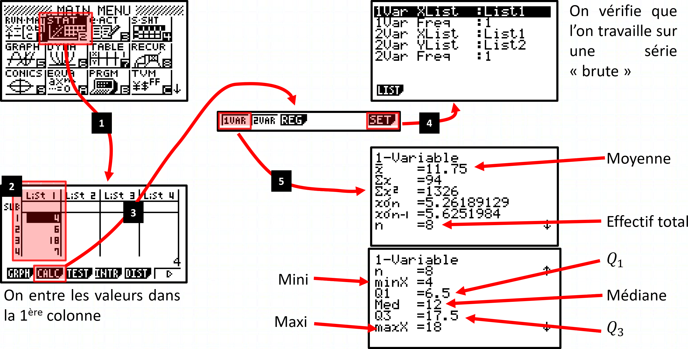
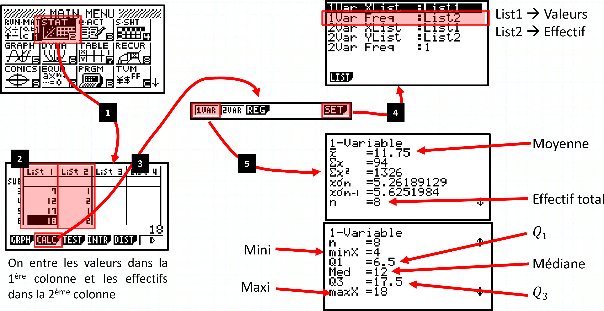
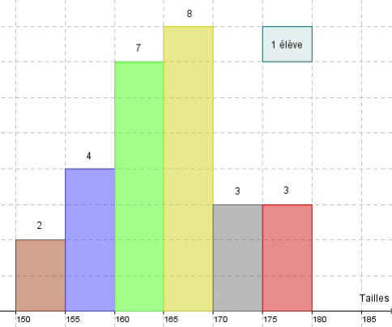
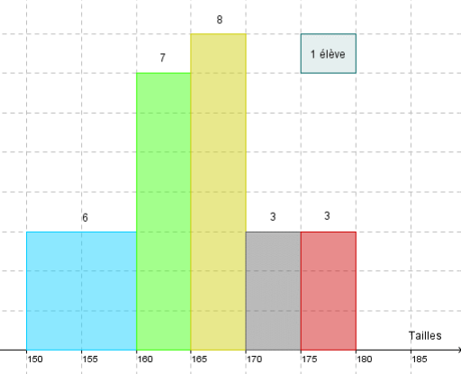

Statistiques descriptives
Caractéristiques d’une série statistique
Ex
- Série statistique sous forme “brute”
Voici une série de notes obtenues par un élève :
$$4 ; 6 ; 18 ; 7 ; 17 ; 12 ; 12 ; 18$$
$~$
- Série statistique sous forme de tableau
| Notes $x_i$ : | $4$ | $6$ | $7$ | $12$ | $17$ | $18$ |
|---|---|---|---|---|---|---|
| Effectif $n_i$ : | $1$ | $1$ | $1$ | $2$ | $1$ | $2$ |
$~$
- Série statistique sous forme de tableau avec effectifs cumulés croissants
| Notes $x_i$ : | $4$ | $6$ | $7$ | $12$ | $17$ | $18$ |
|---|---|---|---|---|---|---|
| Effectif $n_i$ : | $1$ | $1$ | $1$ | $2$ | $1$ | $2$ |
| E.C.C. : | $1$ | $2$ | $3$ | $5$ | $6$ | $8$ |
$~$
- Série statistique sous forme de tableau avec fréquence et fréquences cumulées croissantes
| Notes $x_i$ : | $4$ | $6$ | $7$ | $12$ | $17$ | $18$ |
|---|---|---|---|---|---|---|
| Effectif $n_i$ : | $1$ | $1$ | $1$ | $2$ | $1$ | $2$ |
| Fréq. $f_i$ : | $1/8$ | $1/8$ | $1/8$ | $2/8$ | $1/8$ | $2/8$ |
| F.C.C. : | $1/8$ | $2/8$ | $3/8$ | $5/8$ | $6/8$ | $8/8$ |
Moyenne
Definition
La moyenne d’une série dont les valeurs sont $x_1$, $x_2$ , $\dots$, $x_k$ et les effectifs correspondants sont $n_1$, $n_2$, $\ldots$, $n_k$ est notée $\ol{x}$ est égale à :
$$\boxed{~\ol{x}=\cfrac{(n_1\times x_1)+(n_2\times x_2)+\ldots+(n_k\times x_k)}{N}=\cfrac{1}{N}\sum\limits_{i=1}^{i=k} (n_i\times x_i)~}$$
… avec $\quad N=n_1+n_2+\ldots+n_k\qquad=\sum\limits_{i=1}^{i=k}n_i$
La moyenne est une $\cbox{lightgreen}{caractéristique de position}$.
Exemple
| Notes $x_i$ : | $4$ | $6$ | $7$ | $12$ | $17$ | $18$ | Total $(=N)$ |
|---|---|---|---|---|---|---|---|
| Effectif $n_i$ : | $1$ | $1$ | $1$ | $2$ | $1$ | $2$ | $8$ |
Calcul de la moyenne :
$$\begin{aligned}\ol{x}~&=\cfrac{(n_1\times x_1)+\ldots+(n_k\times x_k)}{N}\\~&=\cfrac{(1\times 4)+(1\times 6)+\ldots+(1\times 17)+(2\times 18)}{8}=11.75\end{aligned}$$
Médiane
Definition
La médiane $m$ est une valeur telle que :
- la moitié au moins de l’effectif ait des valeurs inférieures ou égales à $m$,
- l’autre moitié des valeurs supérieures ou égales à $m$.
La médiane est une $\cbox{lightgreen}{caractéristique de position}$.
Exemple
| Notes $x_i$ : | $4$ | $6$ | $7$ | $12$ | $17$ | $18$ |
|---|---|---|---|---|---|---|
| Effectif $n_i$ : | $1$ | $1$ | $1$ | $2$ | $1$ | $2$ |
| E.C.C. : | $1$ | $2$ | $3$ | $5$ | $6$ | $8$ |
Calcul de la médiane :
$N=8~\iff~\cfrac{N}{2}=4$
$N$ est pair donc la médiane se situe entre la $4^\text{ème}$ et la $5^\text{ème}$ valeur.
On a : $\qquad m=\cfrac{12+12}{2}=12$
Vérification :
Série ordonnée séparée en 2 :
$$\boxed{4;6;7;12}~~\lvert~~\boxed{12;17;18;18}$$
On a bien : $\qquad m=12$
Étendue
Definition
L’étendue d’une série statistique est la différence entre la plus grande valeur et la plus petite valeur de la série.
L’étendue est une $\cbox{lightblue}{caractéristique de dispersion}$.
Exemple
| Notes $x_i$ : | $4$ | $6$ | $7$ | $12$ | $17$ | $18$ |
|---|---|---|---|---|---|---|
| Effectif $n_i$ : | $1$ | $1$ | $1$ | $2$ | $1$ | $2$ |
L’étendue de la série est : $18-4=14$
Quartiles, écart interquartile
Definition
- Le 1er quartile $(Q_1)$ : Plus petite valeur de la série telle qu’au moins $25\%$ des autres valeurs de la série sont $\le$ à cette valeur.
- Le 3ème quartile $(Q_3)$ : Plus petite valeur de la série telle qu’au moins $75\%$ des autres valeurs de la série sont $\le$ à cette valeur.

Exemple
| Notes $x_i$ : | $4$ | $6$ | $7$ | $12$ | $17$ | $18$ |
|---|---|---|---|---|---|---|
| Effectif $n_i$ : | $1$ | $1$ | $1$ | $2$ | $1$ | $2$ |
| E.C.C. : | $1$ | $2$ | $3$ | $5$ | $6$ | $8$ |
Calcul des quartiles :
$N=8~\iff~\cfrac{1}{4}\times N=2\quad\text{et}\quad\cfrac{3}{4}\times N=6$
- $Q_1$ se situe entre la $2^{\text{ème}} $ et la $3^{\text{ème}} $ valeur de la série. $Q_1=\cfrac{6+7}{2}=6.5$
- $Q_3$ se situe entre la $6^{\text{ème}} $ et la $7^{\text{ème}} $ valeur de la série. $Q_3=\cfrac{17+18}{2}=17.5$
Definition
L’écart interquartile d’une série statistique est égal à $Q_3-Q_1$

Rem
- L’écart interquartile mesure la $\cbox{lightblue}{dispersion}$ autour de la médiane.
- Il contient au moins 50% des valeurs de la série.
- L’écart interquartile n’est pas influencé par les valeurs extrêmes.
Exemple
| Notes $x_i$ : | $4$ | $6$ | $7$ | $12$ | $17$ | $18$ |
|---|---|---|---|---|---|---|
| Effectif $n_i$ : | $1$ | $1$ | $1$ | $2$ | $1$ | $2$ |
- $Q_1=6.5\quad$ et $\quad Q_3=17.5$
- L’écart interquartile est de : $17.5-6.5=11$
Variance - Écart-type
Definition
- La variance $V$ est égale à :
$$\boxed{V=\cfrac{1}{N}\times\pa{n_1\times\pa{x_1-\ol{x}}^2 +\ldots+n_k\times\pa{x_k-\ol{x}}^2 }}$$
- L’écart-type est égal à : $\boxed{\sigma=\sqrt{V}}$
L’écart-type et la variance sont des $\cbox{lightblue}{caractéristiques de dispersion}$.
Rem
La variance est la moyenne pondérée du carré de la différence entre les valeurs et la moyenne.
Exemple
| Notes $x_i$ : | $4$ | $6$ | $7$ | $12$ | $17$ | $18$ |
|---|---|---|---|---|---|---|
| Effectif $n_i$ : | $1$ | $1$ | $1$ | $2$ | $1$ | $2$ |
- On a : $\ol{x}= 11.75$
| Notes $x_i$ : | $4$ | $6$ | $\ldots$ | $18$ |
|---|---|---|---|---|
| Effectif $n_i$ : | $1$ | $1$ | $\ldots$ | $2$ |
| $x_i-\ol{x}$ : | $4-11.75$ | $6-11.75$ | $\ldots$ | $18-11.75$ |
| $=-7.75$ | $=-5.75$ | $=6.25$ | ||
| $(x_i-\ol{x})^2$ : | $60.0625$ | $33.0625$ | $\ldots$ | $39.0625$ |
On a :
$$ \def\arraystretch{2}\begin{array}{rlll} V & =\cfrac{1}{N}\times\big(n_1\times(x_1-\ol{x})^2 & +\ldots & +n_k\times(x_k-\ol{x})^2 \big) \\ ~ & =\cfrac{1}{8}\times\big(1\times(4-11.75)^2 & +\ldots & +2\times(18-11.75)^2 \big) \\ ~ & =\cfrac{1}{8}\times\big(1\times 60.0625 & +\ldots & +2\times 39.0625\big)\qquad\qquad\approx 27.7 \end{array} $$
Et donc :
$$\sigma=\sqrt{V}=\sqrt{27.7}\approx 5.26$$
Prop
$$V=\cfrac{1}{N}\sum\limits_{i=1}^{i=N} n_i\times(x-\ol{x})^2 =\underbrace{\left(\cfrac{1}{N}\sum\limits_{i=1}^{i=N} n_i \times (x_i)^2\right)}_{\textstyle\text{Moyenne des } x^2 } - \underbrace{\left(\cfrac{1}{N}\sum\limits_{i=1}^{i=N} n_i\times x_i\right)^2 }_{\textstyle\text{Moyenne}^2}$$
Calculatrice
Ex
- Utilisation de la calculatrice avec une série “brute” $$4 ; 6 ; 18 ; 7 ; 17 ; 12 ; 12 ; 18$$

$~$
- Utilisation de la calculatrice avec un “tableau”
| Notes $x_i$ : | $4$ | $6$ | $7$ | $12$ | $17$ | $18$ |
|---|---|---|---|---|---|---|
| Effectif $n_i$ : | $1$ | $1$ | $1$ | $2$ | $1$ | $2$ |

Cas de pondération d’une série statistique
Ex
- Tailles des $27$ élèves des $4^\text{ème}$ B en cm : (série brute)
174 - 160 - 161 - 166 - 177 - 172 - 157 - 175 - 162 - 169 - 160 165 - 170 - 152 - 168 - 156 - 163 - 167 - 169 - 158 - 164 - 151 - 162 - 166 - 156 - 165 - 179
$~$
- Regroupement par classe : (sous forme de tableau)
| Taille : | $\big[150;155\big[$ | $[155;160[$ | $[160;165[$ | $[165;170[$ | $[170;175[$ | $[175;180[$ |
|---|---|---|---|---|---|---|
| Effectif : | $2$ | $4$ | $7$ | $8$ | $3$ | $3$ |
| Fréq. : | $0.07$ | $0.15$ | $0.26$ | $0.3$ | $0.11$ | $0.11$ |
Représentation sous forme d’histogramme
Ex
| Sans groupement de classes | Avec regroupement de classes |
|---|---|
|  |  |
Calcul de la moyenne
Ex
Dans le cas où les valeurs sont regroupées en classes, on calcule le centre de chaque classe pour calculer la moyenne.
- Le centre de la classe $[150;155[~$ est $~\left(\cfrac{150+155}{2}\right)= 152.5$
- Le centre de la classe $[155;160[~$ est $~\left(\cfrac{155+160}{2}\right)= 157.5$
- $\ldots$
$~$
- Tableau avec les classes centrées
| Classes centrées $x_i$ : | $152.5$ | $157.5$ | $162.5$ | $167.5$ | $172.5$ | $177.5$ |
|---|---|---|---|---|---|---|
| Effectif $n_i$ : | $2$ | $4$ | $7$ | $8$ | $3$ | $3$ |
- Calcul de la moyenne :
$$\ol{x}=\cfrac{1}{27}\times\big(\left(2\times 152.5\right)+\ldots+\left(3\times 177.5\right)\big)\approx 165.28\text{cm}$$